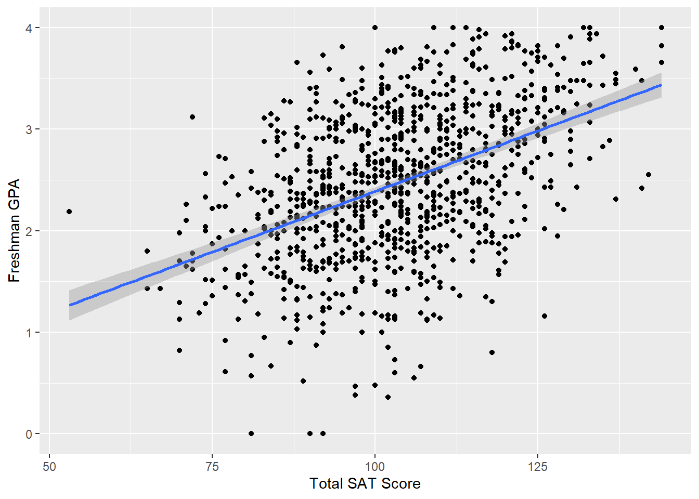
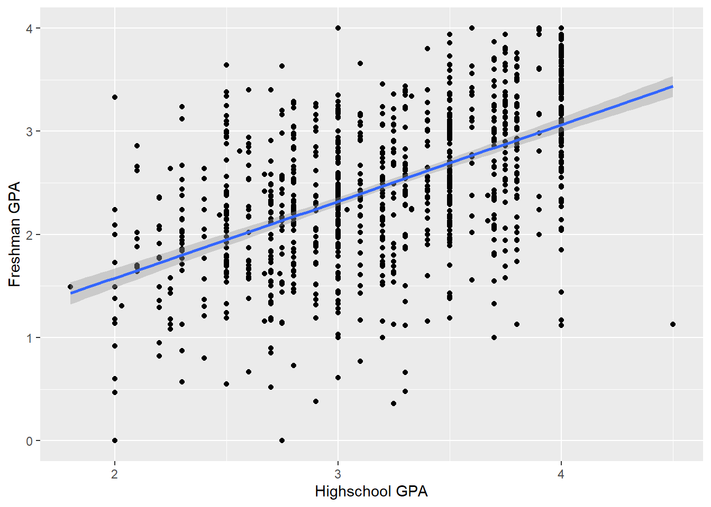
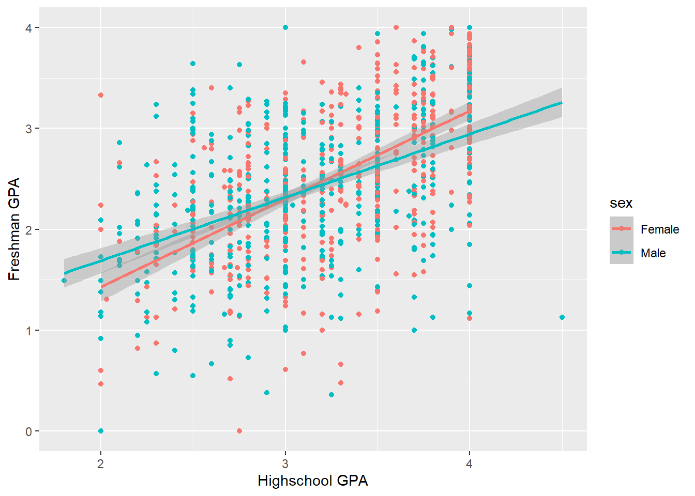
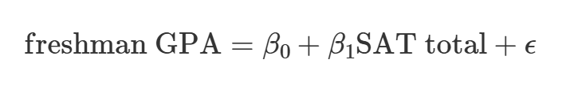
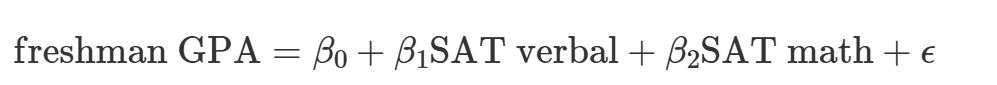
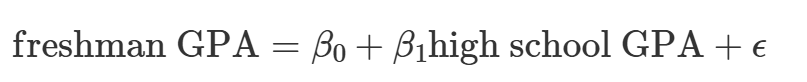
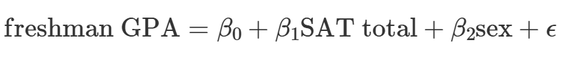
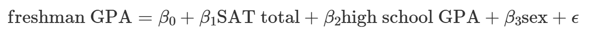

# First we load the libraries and data
library(tidyverse) # This lets you create plots with ggplot, manipulate data, etc.
library(broom) # This lets you convert regression models into nice tables
library(modelsummary) # This lets you combine multiple regression models into a single table
# Load the data.
# It'd be a good idea to click on the "sat_gpa" object in the Environment panel
# in RStudio to see what the data looks like after you load it.
sat_gpa <- read_csv("input/sat_gpa.csv")Introduction
Using SAT and GPA data from Dartmouth College (“Chance” Course) , the goal is to conduct some statistical analysis on this data to answer the questions listed in the sections below:
This is actually a form of People Analytics using Student Past Performance (e.g. SAT Grades) to Predict Future Performance.
Let’s say you are a university admissions officer and you are curious if SAT scores really do predict college performance. You’re also interested in other factors that could influence student performance.
The data contains 6 variables:
sex: The sex of the student (male or female; female is the base case)sat_verbal: The student’s percentile score in the verbal section of the SATsat_math: The student’s percentile score in the math section of the SATsat_total:sat_verbal+sat_mathgpa_hs: The student’s GPA in high school at graduationgpa_fy: The student’s GPA at the end of their freshman year
Correlations (Exploratory Questions)
1. How well do SAT scores correlate with freshman GPA?
1.1 Using the Correlation Function
cor(sat_gpa$sat_total,sat_gpa$gpa_fy)[1] 0.4602811.2 Drawing a scatterplot of the relationship using ggplot
ggplot(data = sat_gpa, mapping = aes(x=sat_total, y=gpa_fy)) +
geom_point() +
geom_smooth(method = "lm") +
labs(x="Total SAT Score", y="Freshman GPA")`geom_smooth()` using formula = 'y ~ x'
…
2. How well does high school GPA correlate with freshman GPA?
2.1 Using the Correlation Function
cor(sat_gpa$gpa_hs,sat_gpa$gpa_fy)[1] 0.54335352.2 Drawing a scatterplot of the relationship using ggplot
ggplot(data = sat_gpa, mapping = aes(x=gpa_hs, y=gpa_fy)) +
geom_point() +
geom_smooth(method = "lm") +
labs(x="Highschool GPA", y="Freshman GPA")`geom_smooth()` using formula = 'y ~ x'
…
3A. Is the correlation between SAT scores and freshman GPA stronger for men or for women?
sat_gpa |>
group_by(sex) |>
summarise(correlation = cor(sat_total,gpa_fy))# A tibble: 2 × 2
sex correlation
<chr> <dbl>
1 Female 0.493
2 Male 0.4813B. Is the correlation between HighSchool GPA and freshman GPA stronger for men or for women?
sat_gpa |>
group_by(sex) |>
summarise(correlation = cor(gpa_hs,gpa_fy))# A tibble: 2 × 2
sex correlation
<chr> <dbl>
1 Female 0.597
2 Male 0.483ggplot(data = sat_gpa, mapping = aes(x=gpa_hs, y=gpa_fy, color=sex)) +
geom_point() +
geom_smooth(method = "lm") +
labs(x="Highschool GPA", y="Freshman GPA")`geom_smooth()` using formula = 'y ~ x'
….
Predictive Models
4. Do SAT scores predict freshman GPAs?
A reminder of the formula we’ll be replicating when doing linear regression i.e. Y = mX + b, where:
Y - the outcome variable
X - in the explanatory variable
m - is the slope (rise over run)
b - is the Y-intercept
For this particular case, it can be represented by the formula below:

- Where the “E” looking symbol at the end represents the standard error
The R-code to implement this, is below:
model_sat_gpa <- lm(gpa_fy ~ sat_total, data = sat_gpa) # You can read this as Freshman gpa "is explained by" / "~" SAT scores
# Look at the model results and include confidence intervals for the coefficients
tidy(model_sat_gpa, conf.int = TRUE)# A tibble: 2 × 7
term estimate std.error statistic p.value conf.low conf.high
<chr> <dbl> <dbl> <dbl> <dbl> <dbl> <dbl>
1 (Intercept) 0.00193 0.152 0.0127 9.90e- 1 -0.296 0.300
2 sat_total 0.0239 0.00146 16.4 1.39e-53 0.0210 0.0267Here’s what these coefficients mean:
The Y-intercept (Beta-0) is 0.002, which means that the average freshman GPA will be 0.002 when the total SAT percentile score is 0. This is a pretty nonsensical number (nobody has a score that low), so we can ignore it.
The slope of
sat_total(Beta-1) is 0.024, which means that a 1 percentile increase in SAT score is associated with a 0.024 point increase in GPA, on average. Rise over Run i.e. 1% rise, 0.024 run.
We can look at the summary table of the regression to check the R-squared (R^2) :
glance(model_sat_gpa)# A tibble: 1 × 12
r.squared adj.r.squared sigma statistic p.value df logLik AIC BIC
<dbl> <dbl> <dbl> <dbl> <dbl> <dbl> <dbl> <dbl> <dbl>
1 0.212 0.211 0.658 268. 1.39e-53 1 -999. 2005. 2019.
# ℹ 3 more variables: deviance <dbl>, df.residual <int>, nobs <int>The R-squared here is 0.212, which means that SAT scores explain 21% of the variation in freshman GPA. It’s not a fantastic model, but it explains some stuff.
…
5. Does a certain type of SAT score have a larger effect on freshman GPAs?
The 2 types of SAT scores are:
SAT Verbal, and
SAT Math
This particular case, can be represented by the formula below:

Implementing this in R:
model_sat_gpa_types <- lm(gpa_fy ~ sat_verbal + sat_math, data = sat_gpa)
tidy(model_sat_gpa_types, conf.int = TRUE)# A tibble: 3 × 7
term estimate std.error statistic p.value conf.low conf.high
<chr> <dbl> <dbl> <dbl> <dbl> <dbl> <dbl>
1 (Intercept) 0.00737 0.152 0.0484 9.61e- 1 -0.291 0.306
2 sat_verbal 0.0254 0.00286 8.88 3.07e-18 0.0198 0.0310
3 sat_math 0.0224 0.00279 8.04 2.58e-15 0.0169 0.0279Again, the intercept is meaningless since no student has a zero on both the verbal and the math test.
The slope for
sat_verbal(or Beta-1) is 0.025, so a one percentile point increase in the verbal SAT is associated with a 0.025 point increase in GPA, on average, controlling for math scoresMeanwhile, a one percentile point increase in the math SAT () is associated with a 0.022 point increase in GPA, on average, controlling for verbal scores.
These are essentially the same, so at first glance, it doesn’t seem like the type of test has substantial bearing on college GPAs.
Checking the Adjusted R-squared:
glance(model_sat_gpa_types)# A tibble: 1 × 12
r.squared adj.r.squared sigma statistic p.value df logLik AIC BIC
<dbl> <dbl> <dbl> <dbl> <dbl> <dbl> <dbl> <dbl> <dbl>
1 0.212 0.211 0.658 134. 2.36e-52 2 -999. 2006. 2026.
# ℹ 3 more variables: deviance <dbl>, df.residual <int>, nobs <int>The adjusted R-squared (which we need to look at because we’re using more than one explanatory variable) is 0.211, which means that this model explains 21% of the variation in college GPA. Like before, this isn’t great, but it tells us a little bit about the importance of SAT scores.
…
6A. Do high school GPAs predict freshman GPAs?
Similar to the above in approach, but now the formula is:

And implementing the model in R is as follows:
model_sat_gpa_hs <- lm(gpa_fy ~ gpa_hs, data = sat_gpa)
tidy(model_sat_gpa_hs)# A tibble: 2 × 5
term estimate std.error statistic p.value
<chr> <dbl> <dbl> <dbl> <dbl>
1 (Intercept) 0.0913 0.118 0.775 4.39e- 1
2 gpa_hs 0.743 0.0363 20.4 6.93e-78The intercept here (Beta-0) is 0.091, which means that a student with a high school GPA of zero would have a predicted freshman GPA of 0.091, on average. This is nonsensical, so we can ignore it.
The slope for
gpa_hs(Beta-1), on the other hand, is helpful. For every 1 point increase in GPA (i.e. moving from 2.0 to 3.0, or 3.0 to 4.0), there’s an associated increase in college GPA of 0.743 points, on average.
Checking the R-squared, for this model:
glance(model_sat_gpa_hs)# A tibble: 1 × 12
r.squared adj.r.squared sigma statistic p.value df logLik AIC BIC
<dbl> <dbl> <dbl> <dbl> <dbl> <dbl> <dbl> <dbl> <dbl>
1 0.295 0.295 0.622 418. 6.93e-78 1 -943. 1893. 1908.
# ℹ 3 more variables: deviance <dbl>, df.residual <int>, nobs <int>- The R-squared value is 0.295, which means that nearly 30% of the variation in college GPA can be explained by high school GPA. Neat.
6B. College GPA ~ SAT + sex
Next, we can see how both SAT scores and sex affect variation in college GPA with the following model:

Implementation in R:
model_sat_sex <- lm(gpa_fy ~ sat_total + sex, data = sat_gpa)
tidy(model_sat_sex, conf.int = TRUE)# A tibble: 3 × 7
term estimate std.error statistic p.value conf.low conf.high
<chr> <dbl> <dbl> <dbl> <dbl> <dbl> <dbl>
1 (Intercept) -0.0269 0.149 -0.181 8.57e- 1 -0.319 0.265
2 sat_total 0.0255 0.00145 17.6 1.14e-60 0.0227 0.0284
3 sexMale -0.274 0.0414 -6.62 6.05e-11 -0.355 -0.193 Here, stuff gets interesting. The intercept (Beta-0) is once again nonsensical—females with a 0 score on their SAT would have a -0.027 college GPA on average.
There’s a positive effect with our Beta-1 (or
sat_total), since controlling for sex, a one percentile point increase in SAT scores is associated with a 0.026 point increase in freshman GPA, on average.If we control for SAT scores, males see an average drop of 0.274 points (Beta-2) in their college GPAs.
The combination of these two variables, however, doesn’t boost the model’s explanatory power that much.
Adjusted R-squared:
glance(model_sat_sex)# A tibble: 1 × 12
r.squared adj.r.squared sigma statistic p.value df logLik AIC BIC
<dbl> <dbl> <dbl> <dbl> <dbl> <dbl> <dbl> <dbl> <dbl>
1 0.245 0.243 0.644 162. 1.44e-61 2 -978. 1964. 1983.
# ℹ 3 more variables: deviance <dbl>, df.residual <int>, nobs <int>- The adjusted R-squared (which we must look at because we’re using more than one explanatory variable) is 0.243, meaning that the model explains a little over 24% of the variation in college GPAs.
6C. College GPA ~ SAT + high school GPA + sex
Finally we can see what the effect of SAT scores, high school GPA, and sex is on college GPAs all at the same time, using the following model:

Implementation in R:
model_sat_hs_sex <- lm(gpa_fy ~ sat_total + gpa_hs + sex, data = sat_gpa)
tidy(model_sat_hs_sex, conf.int = TRUE)# A tibble: 4 × 7
term estimate std.error statistic p.value conf.low conf.high
<chr> <dbl> <dbl> <dbl> <dbl> <dbl> <dbl>
1 (Intercept) -0.836 0.148 -5.63 2.35e- 8 -1.13 -0.544
2 sat_total 0.0158 0.00150 10.5 9.72e-25 0.0129 0.0188
3 gpa_hs 0.545 0.0394 13.8 6.61e-40 0.467 0.622
4 sexMale -0.143 0.0391 -3.66 2.66e- 4 -0.220 -0.0664Yet again, the intercept (Beta-0) can be safely ignored. Here it means that a female with a 0.0 high school GPA and an SAT score of 0 would have a college GPA of -0.84, on average. That’s pretty impossible.
The Beta-1 coefficient for
sat_totalindicates that taking into account high school GPA and sex, a one percentile point increase in a student’s SAT score is associated with a 0.016 point increase in their college GPA, on average.Controlling for SAT scores and sex, a one point increase in high school GPA is associated with a 0.545 point (this is Beta-2) increase in college GPA, on average. This coefficient is lower than the 0.74 point coefficient we found previously. That’s because SAT scores and sex soaked up some of high school GPA’s explanatory power.
Taking SAT scores and high school GPAs into account, males have a 0.143 point lower GPA in college, on average (this is Beta-3 )
Adjusted R-squared:
glance(model_sat_hs_sex)# A tibble: 1 × 12
r.squared adj.r.squared sigma statistic p.value df logLik AIC BIC
<dbl> <dbl> <dbl> <dbl> <dbl> <dbl> <dbl> <dbl> <dbl>
1 0.367 0.365 0.590 192. 2.67e-98 3 -890. 1790. 1815.
# ℹ 3 more variables: deviance <dbl>, df.residual <int>, nobs <int>- As always, the adjusted shows us how well the model fits overall (again, we have to look at the adjusted because we have more than one explanatory variable). In this case, the model explains 36.5% of the variation in college GPA, which is higher than any of the previous models (but not phenomenal, in the end).
…
7. Which model best predicts freshman GPA? How do you know?
As you’ve learned in previous stats classes, adjusted generally shows the strength of a model’s fit, or how well the model will predict future values of the outcome variable. If we compare the adjusted for each of the models, we see that the “best” model is the last one.
# The modelsummary() function takes a bunch of different regression models and
# puts them in a neat side-by-side table. In a normal report or analysis, you'd
# include all of these once instead of going one by one like we did above.
modelsummary(list(model_sat_gpa, model_sat_gpa_types, model_sat_gpa_hs,
model_sat_sex, model_sat_hs_sex))| (1) | (2) | (3) | (4) | (5) | |
|---|---|---|---|---|---|
| (Intercept) | 0.002 | 0.007 | 0.091 | -0.027 | -0.836 |
| (0.152) | (0.152) | (0.118) | (0.149) | (0.148) | |
| sat_total | 0.024 | 0.026 | 0.016 | ||
| (0.001) | (0.001) | (0.002) | |||
| sat_verbal | 0.025 | ||||
| (0.003) | |||||
| sat_math | 0.022 | ||||
| (0.003) | |||||
| gpa_hs | 0.743 | 0.545 | |||
| (0.036) | (0.039) | ||||
| sexMale | -0.274 | -0.143 | |||
| (0.041) | (0.039) | ||||
| Num.Obs. | 1000 | 1000 | 1000 | 1000 | 1000 |
| R2 | 0.212 | 0.212 | 0.295 | 0.245 | 0.367 |
| R2 Adj. | 0.211 | 0.211 | 0.295 | 0.243 | 0.365 |
| AIC | 2004.8 | 2006.4 | 1893.0 | 1963.8 | 1790.2 |
| BIC | 2019.5 | 2026.0 | 1907.7 | 1983.4 | 1814.8 |
| Log.Lik. | -999.382 | -999.189 | -943.477 | -977.904 | -890.108 |
| F | 268.270 | 134.244 | 418.071 | 161.762 | 192.141 |
| RMSE | 0.66 | 0.66 | 0.62 | 0.64 | 0.59 |
…